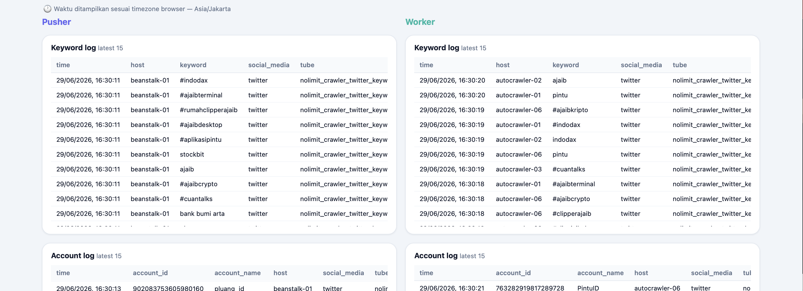
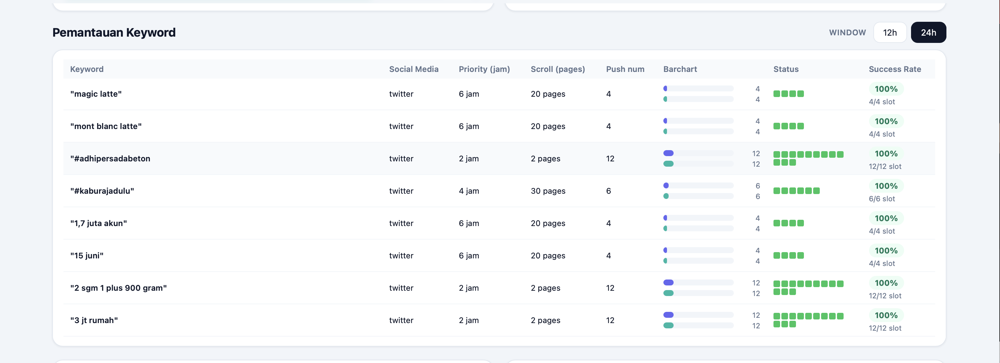
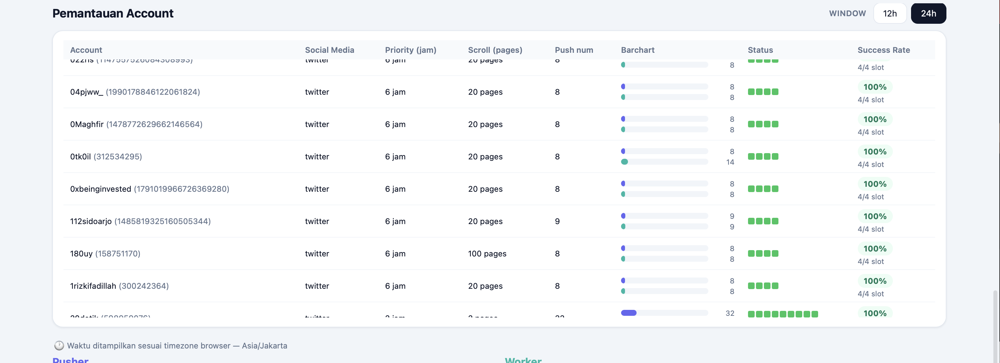
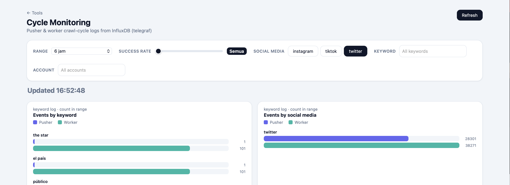

PT Nolimit Indonesia's social media ingestion pipeline runs continuous crawl jobs across Twitter/X and Instagram for thousands of tracked keywords and accounts. Each object has its own crawl frequency (priority interval) and scroll depth configured in the database — but there was no way for operators to know if jobs were being dispatched on time, stalling in the queue, or silently failing.
With no monitoring layer, a stalled Pusher or a backed-up Worker queue could go undetected for hours, causing gaps in data coverage for government and corporate clients who depend on continuous social media intelligence.
isActive=True entries and paginating to 100 rows per view, keeping dashboard load times fast regardless of dataset size.The dashboard gave operators their first real-time view into the health of the crawl pipeline — surfacing success rates, on-time flags, and Pusher vs. Worker throughput comparisons in a single interface. Stalled jobs that previously went undetected for hours could now be identified immediately via the success rate filter and on-time indicators.
The system was integrated into PT Nolimit Indonesia's internal analytics infrastructure, handling tens of thousands of active tracking objects across multiple platforms and client accounts — with dual-source reads kept performant through targeted filtering and pagination.



